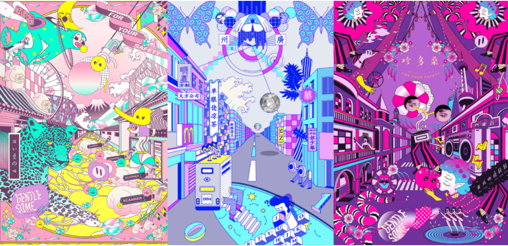

Manifesto History
为了安全，请务必温柔。
画作未必带来相同的想象，但张嘉通的文字给予了 Gentlesome 最初的理想。

文字给予了想象
作品的画面未必带给我相同的想象，但张嘉通写下的这段话给了 Gentlesome 最初的方向。 这也是艺术传播的力量：它让一句愿望越过作品本身，进入现实，并逐渐长成品牌的精神中心。
Gentlesome 从最初的意志形态到如今的存在本身，便是艺术传承的伟大体现。对于精神世界的仰望之旅，我们似乎只能通过或多或少的运气来自我定义；然而如今，我们或许能将它们集结起来，在艺术精神的体验中，坚定我们曾希望的。
Spirit Archive